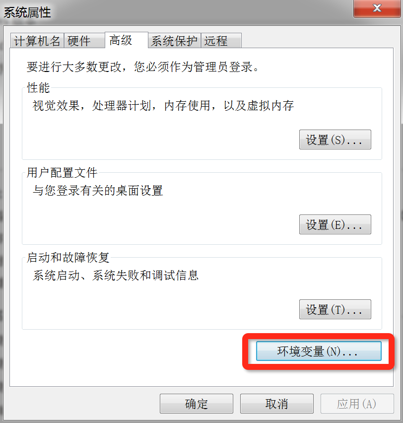
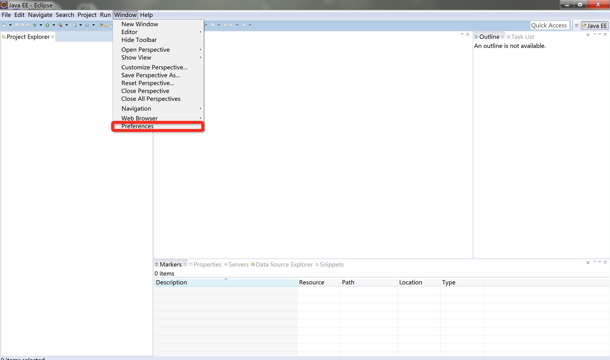

用户开发环境搭建
用户开发环境搭建时，首先要安装以下开发工具：
- JDK：EAD 平台的开发语言为Java，所以在开发环境首先要安装 JDK；
- Eclipse：EAD 扩展开发需要在 IDE 上进行，我们选择 Eclipse 进行扩展开发；
- Maven：EAD 扩展开发时的依赖管理工具及打包工具我们选择 Maven。
工具安装完成后，在 Java 开发工具 Eclipse 中建立 EAD 工程。
安装 JDK
EAD 后端是基于 Java 语言开发。 进入 Oracle 的官网，选择 JDK 1.7+版本，下载JDK。 下载地址如下：http://www.oracle.com/technetwork/java/javase/downloads/index.html。
安装 Eclipse
EAD 扩展开发 IDE 选用 Eclipse。 下载地址如下：https://eclipse.org/downloads/ Eclipse 无需安装，下载解压后即可使用。
安装 Maven
EAD 依赖管理及打包采用 Maven 进行管理。下载地址如下：https://maven.apache.org/download.cgi
配置 Maven 环境变量
在 Windows 用户环境变量中加入 Maven 路径。
1、打开Windows 用户环境变量设置菜单


2、配置 Maven 环境变量

Eclipse 中配置 Maven

